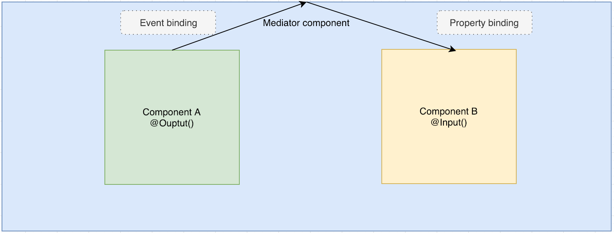
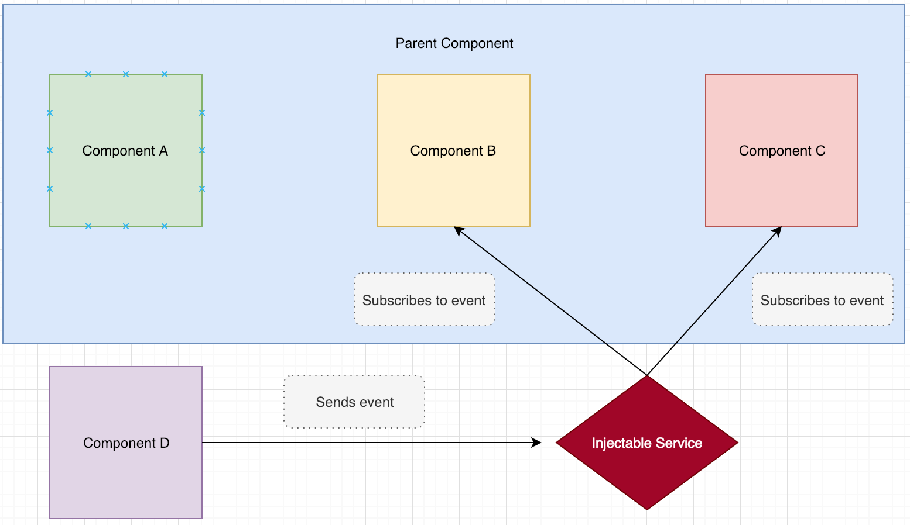
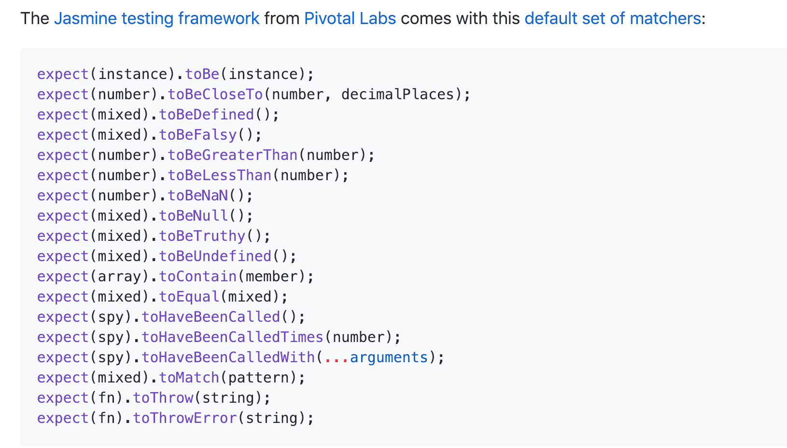

A platform and framework for building client applications in HTML and TypeScript.
Node Package Manager (npm)
You can find all the packages on npmjs.org
In order to install a package you have to wirte:
npm install package_name
The module will be installed in a directory called node_modules inside the directory where you ran the command from.
In order to install it globally you can specify -g flag
All the project dependencies are listed in a package.json file
The npm install command will add the package as an entry to the package.json file (if it exists)
To create the package.json write:
npm init
All the packages are installed by default under the dependencies listing
To install it under the devDependencies you need to specify the -D flag
In order to install only the dependencies listed under the dependencies section (without devDependencies)
npm i --production
npm scripts
pre/post scripts
"scripts": {
"preinstall": "scripts/preinstall.js"
"install" : "scripts/install.js",
"postinstall" : "scripts/postinstall.js",
"start:server": "app/server.js"
}
Running the npm install command will first run the preinstall, followed by the install and finally the postinstall
In order to run the start:server script we need to use: npm run start:server (run tells npm to execute the file)
package-lock.json
Pakcage lock is a file that ensures that every environment where the npm install is run will have the same version of dependencies as the user who installed them.
Push the package-lock.json to the repository as well.
Don't forget to place the node_modules in the .gitignore file, we shouldn't push that to the repository!
Recap
- npm is a dependency managment tool
- We can install packages using the npm install command
- We can run scripts that are not overriding default npm commands using the: npm run script_name
- Don't forget to ignore the node_modules so that it's not pushed to the repository
Angular CLI
Official documentation
The Angular CLI helps us with:
- Scaffolding a new project that will sever as the base for our application
- Scaffolding components, directives, pipes, modules, etc.
- Has a built in development server to run our application
- Creates development and production builds
- Has built in configurable test runner (Karma as the testing framework and Jasmine as the assertion library)
Setting up the CLI
- npm i -g @angular/cli
- ng new project_name (add the --style=sass in order to generate the project using the sass css preprocessor)
- cd project_name
- ng serve -o
Check the core files
- src directory
- main.ts file
- app.module
- angular.json
- package.json
Angular CLI scaffolding commands
- ng g c component_name (ng generate component)
- ng g s service_name (ng generate service)
- ng g m module_name (ng generate module)
- ng generate --help
Recap
- We use the CLI to generate a new app (new new app_name)
- We can use the CLI to scaffold components, services, modules, etc.
- We use the CLI to serve our application in development mode
- We use the CLI to start our test runners
Intro into TypeScript
- A superset of JavaScript created by Microsoft
- Supports types, classes, interfaces, generics, annotations
- Easy to learn by Java, C#, and C++ developers
- Transpiles code into a human-readable JavaScript
- Supports most of the ES6 and some ES7 syntax
Installing the TypeScript transpiler
npm i -g typescript
To transpile a typescript file (.ts) to a .js file:
tsc —t ES5 file_name (-t specifies the target to be ES5 the standard supported by all browsers)
TypeScript configuration file (tsconfig.json)
Saves us from writing tons of flags
List of all the options
{
"compilerOptions": {
"rootDir": "src",
"outDir": "./dist/out-tsc",
"target": "ES5",
"module": "commonjs",
"experimentalDecorators": true, // used by Angular
"sourceMap": true
},
"include": [
"src/**/*"
],
"exclude": [
"node_modules",
"**/*.spec.ts"
]
}
If the tsconfig.json is not in the current directory specify the
--project flag with the relative path to the tsconfig
Transpiling TypeScript Interactively
TypeScript
let foo: string;
class Bar {
}
JavaScript (ES5)
var foo;
var Bar = (function () {
function Bar() {
}
return Bar;
}());
Classes
TypeScript
class Person {
public firstName: string;
public lastName: string;
public age: number;
}
let p = new Person();
p.firstName = "John";
p.lastName = "Smith";
p.age = 29;
JavaScript (ES5)
var Person = (function () {
function Person() {
}
return Person;
}());
var p = new Person();
p.firstName = "John";
p.lastName = "Smith";
p.age = 29;
Optional types
TypeScript
// Explicit types
let productName = 'BMW';
productName = 'Mercedes';
// compile error in TS
productName = 123;
//Implicit types
let productVendor: string = 'Samsung';
productVendor = 'Sony';
// compile error in TS
productVendor = 123;
JavaScript (ES5)
// Explicit types
var productName = 'BMW';
productName = 'Mercedes';
// no compiler error in JS
productName = 123;
A Class With Constructor. Take 1
TypeScript
class Person {
public firstName: string;
public lastName: string;
public age: number;
private _ssn: string;
constructor(firstName: string, lastName: string, age: number, ssn: string) {
this.firstName = firstName;
this.lastName = lastName;
this.age = age;
this._ssn = ssn;
}
}
var p = new Person("John", "Smith", 29, "123-90-4567");
console.log("Last name: " + p.lastName + " SSN: " + p._ssn);
JavaScript (ES5)
var Person = (function () {
function Person(firstName, lastName, age, ssn) {
this.firstName = firstName;
this.lastName = lastName;
this.age = age;
this._ssn = ssn;
}
return Person;
}());
var p = new Person("John", "Smith", 29, "123-90-4567");
console.log("Last name: " + p.lastName + " SSN: " + p._ssn);
A Class With Constructor. Take 2
TypeScript
class Person {
constructor(
public firstName: string,
public lastName: string,
public age: number,
private _ssn: string
) { }
}
var p = new Person("John", "Smith", 29, "123-90-4567");
console.log("Last name: " + p.lastName + " SSN: " + p._ssn);
JavaScript (ES5)
var Person = (function () {
function Person(firstName, lastName, age, _ssn) {
this.firstName = firstName;
this.lastName = lastName;
this.age = age;
this._ssn = _ssn;
}
return Person;
}());
var p = new Person("John", "Smith", 29, "123-90-4567");
console.log("Last name: " + p.lastName + " SSN: " + p._ssn);
Inheritance
Classical syntax
class Person {
constructor(
public firstName: string,
public lastName: string,
public age: number,
private _ssn: string
) { }
}
class Employee extends Person { }
Prototypal
var __extends = (this && this.__extends) || function (d, b) {
for (var p in b) if (b.hasOwnProperty(p)) d[p] = b[p];
function __() { this.constructor = d; }
d.prototype = b === null ? Object.create(b) : (__.prototype = b.prototype, new __());
};
var Person = (function () {
function Person(firstName, lastName, age, _ssn) {
this.firstName = firstName;
this.lastName = lastName;
this.age = age;
this._ssn = _ssn;
}
return Person;
}());
var Employee = (function (_super) {
__extends(Employee, _super);
function Employee() {
return _super.apply(this, arguments) || this;
}
return Employee;
}(Person));
Generics
TypeScript
class Person {
name: string;
}
class Employee extends Person {
department: number;
}
class Animal {
breed: string;
}
let workers: Array<Person> = [];
workers[0] = new Person();
workers[1] = new Employee();
workers[2] = new Animal(); //A compile time error
JavaScript
var __extends = (this && this.__extends) || function (d, b) {
for (var p in b) if (b.hasOwnProperty(p)) d[p] = b[p];
function __() { this.constructor = d; }
d.prototype = b === null ? Object.create(b) : (__.prototype = b.prototype, new __());
};
var Person = (function () {
function Person() {
}
return Person;
}());
var Employee = (function (_super) {
__extends(Employee, _super);
function Employee() {
return _super.apply(this, arguments) || this;
}
return Employee;
}(Person));
var Animal = (function () {
function Animal() {
}
return Animal;
}());
var workers = [];
workers[0] = new Person();
workers[1] = new Employee();
workers[2] = new Animal(); //No errors
Interfaces as Custom Types
TypeScript
interface IPerson {
firstName: string;
lastName: string;
age?: number;
}
class Person {
constructor(public config: IPerson) { }
}
const aPerson: IPerson = {
firstName: "John",
lastName: "Smith",
age: 29
}
const p = new Person(aPerson);
console.log("Last name: " + p.config.lastName);
JavaScript
var Person = (function () {
function Person(config) {
this.config = config;
}
return Person;
}());
var aPerson = {
firstName: "John",
lastName: "Smith",
age: 29
};
var p = new Person(aPerson);
console.log("Last name: " + p.config.lastName);
//No interfaces here
Interfaces and implements
TypeScript
interface IPayable {
increasePay(percent: number): void
}
class Employee implements IPayable {
increasePay(percent: number) {
//increase salary
}
}
class Contractor implements IPayable {
increasePay(percent: number): void {
//increase hourly rate
}
}
let workers: Array<IPayable> = [];
workers[0] = new Employee();
workers[1] = new Contractor();
workers.forEach(worker => worker.increasePay(30));
JavaScript
var Employee = (function () {
function Employee() {
}
Employee.prototype.increasePay = function (percent) {
//increase salary
};
return Employee;
}());
var Contractor = (function () {
function Contractor() {
}
Contractor.prototype.increasePay = function (percent) {
//increase hourly rate
};
return Contractor;
}());
var workers = [];
workers[0] = new Employee();
workers[1] = new Contractor();
workers.forEach(function (worker) { return worker.increasePay(30); });
Recap
- Typescript is a superset of JavaScript
- Supports types, classes, interfaces, generics, decorators
- Transpiles TypeScript code to human readable JavaScript
- We can transpile .ts files using the tsc command
- We should create a tsconfig.json file to store all our compiler options
Clone traning application
git clone https://github.com/mariusva/angular-workshop
cd angular-workshop
git fetch
git checkout step1
npm install
ng serve -o
NgModules
- the basic building blocks of Angular
- provide a compilation context for components
import { NgModule } from '@angular/core';
@NgModule({
imports: [...],
declarations: [...]
exports: [...],
providers: [...]
})
export class AppModule { }
Components
- combination of an HTML template and a component class that controls a portion of the screen
- class, decorator, metadata
- defined views
- use services
import { Component } from '@angular/core';
@Component({
selector: 'ngt-component', // wrapps the whole content
template: ` // backtick
Hello {{ name }}
`,
styleUrls: ['ngt-component.css']
providers: [...]
})
export class NgtComponent {
protected name = 'Angular';
}
Templates, directives, and data binding
- combines HTML with Angular markup that can modify the HTML elements before they are displayed
- Event binding lets your app respond to user input
- Property binding lets you interpolate values that are computed from your application data into the HTML
Interpolation
import { Component } from '@angular/core';
@Component({
selector: 'ngt-component',
template: `
{{ title }}
My favorite car is: {{ myCar }}
`
})
export class NgtComponent {
protected title = 'Cars';
protected myCar = 'Mercedes';
}
Property binding
import { Component } from '@angular/core';
@Component({
selector: 'ngt-component',
template: `
My favorite car is
`
})
export class NgtComponent {
protected favoriteCar = 'Mercedes';
}
Event binding
import { Component } from '@angular/core';
@Component({
selector: 'ngt-component',
template: `
`
})
export class NgtComponent {
protected notify(): void {
console.log("The button was clicked")
}
}
Two way data binding (banana in the box)
import { Component } from '@angular/core';
@Component({
selector: 'ngt-component',
template: `
`
})
export class NgtComponent {
protected username = 'Test';
}
Recap
- Javascript code can be used in the html using interpolation {{ ... }}
- We can bind to DOM node properties (and not only) using square brakets [value]
- Binding to DOM events (and not only) can be achieved through round brakets (click)
- Two way data binding can be achieved by combinding square and round brakets (banana in the box) [(ngModel)]
Inter-component communication
- @Input and @Output properties
- Using a parent component as a mediator
- Using an injectable service as a mediator
@Input and @Output properties
Think of a component as a black box with entry and exit doors
Properties marked as @Input() are used for getting data from the parent component
Properties marked as @Output() are used for sending events (and data) from a component
@Component({
selector: 'ngt-parent',
template: `
@Component({
selector: 'ngt-parent',
template: `
The Mediator acts as a man in the middle
A component A sends the data to a mediator, which passes the data to a component B
Component A and Component B don’t know about each other, the parent component can mediate siblings’ communications
An injectable service can mediate communication between any components
Component as a mediator
Service as a mediator
Recap
- Components receive data from their parents via @Input() properties.
- Components send data to their parents by emiting data through their @Output() properties.
- The mediator pattern helps us achieve inter-component communication through a loosely-coupled manner.
- Using injectable services is the most flexible way of inter-component communication.
Content projection
- It is used for passing HTML elements or Angular components to a child component
- In order for the fragments to be rendered to the DOM, an <ng-content> tag will be used as a placeholder in the child where the actual content should be projected
@Component({
selector: 'ngt-parent',
template: `
This is from the parent component
Parent projects this element into the child
`
})
export class ParentComponent { }
@Component({
selector: 'ngt-child',
template: `
This is from the child component
Multiple content projections
The "select" attribute allows the use of multiple targeted
<ng-content> tags
It's an actual css selector, so any selector can be used: class, attribute, id, element
@Component({
selector: 'ngt-parent',
template: `
This is from the parent component
Title
Some description
General info
`
})
export class ParentComponent { }
@Component({
selector: 'ngt-child',
template: `
`
})
export class ChildComponent { }
Recap
- We can project content to a child component by using the <ng-content>
- We can have multiple content projection by adding a select attribute to the <ng-content>
Directives
- A class annotated with @Directive()
- Can't have it's own UI (HTML markup)
- It can be attached to an HTML element (native element or component)
- Structural directives—change the DOM layout by adding and removing DOM elements. (*ngFor, *ngIf, *ngSwitch)
- Attribute directives—change the appearance or behavior of an element, component, or another directive.(ngClass, ngStyle)
*ngIf
@Component({
selector: 'ngt-example',
template: `
Details section
`
})
export class ExampleComponent {
protected showDetails = false;
}
*ngFor
@Component({
selector: 'ngt-example',
template: `
-
{{ product.name }}, index: {{ i }}
`
})
export class ExampleComponent {
protected products = [
{ name: 'product1' },
{ name: 'product2' },
{ name: 'product3' }
];
}
*ngSwitch
@Component({
selector: 'ngt-example',
template: `
...
...
...
`
})
export class ExampleComponent {
@Input() country = null;
}
Description of an attribute directive
import { Directive, ElementRef, HostListener, Input } from '@angular/core';
@Directive({
selector: '[appHighlight]'
})
export class HighlightDirective {
@Input() highlightColor: string = 'white';
constructor(private el: ElementRef) { }
@HostBinding('class.red') red = true;
@HostListener('mouseenter') onMouseEnter() {
this.highlight(highlightColor);
}
@HostListener('mouseleave') onMouseLeave() {
this.highlight(null);
}
private highlight(color: string) {
this.el.nativeElement.style.backgroundColor = color;
}
}
Usage of an attribute directive
Highlight me!
Highlight me!
Recap
- Directives can be attached to and HTML tag or a component to enchance the functionality/appearance
- We have two kind of directives:
- structural directives (*ngIf, *ngFor, *ngSwitch)
- attribute directives (ngClass, ngStyle)
Pipes
They are functions that help us process data in the template (HTML)
import { Pipe, PipeTransform } from '@angular/core';
/*
* Returns '-'' if the data is null or undefined
* Usage:
* value | emptyValue
* Example:
* {{ undefined | emptyValue }}
* formats value to: '-'
*/
@Pipe({ name: 'emptyValue' })
export class EmptyValueFormatterPipe implements PipeTransform {
transform(value: any): string {
if (value != null && !value.isUndefined && value !== 'null') {
return value;
} else {
return '-';
}
}
}
import { Component } from '@angular/core';
@Component({
selector: 'ngt-example',
template: `
{{ username | emptyValue }}
`
})
export class ExampleComponent {
protected username = null;
}
Services and Dependency Injection
- Don’t instantiate classes with the new operator
- Angular creates and injects services into components, directives or other services
- Angular can create and inject values into variables
- We can inject services into components, directives or services using the constructor
- In order to inject a service / value, angular needs to have that defined in the providers section in a module/component
@NgModule({
providers: [{
provide: ListApiService,
useClass: ListApiService
}]
})
class AppModule { }
// short hand
@NgModule({
providers: [ListApiService]
})
class AppModule { }
@NgModule({
providers: [{
provide: ListApiService,
useClass: MockedApiService
}]
})
class AppModule { }
import { Injectable } from '@angular/core';
// @Injectable(provideIn: 'root')
@Injectable()
export class ListApiService {
...
}
import { Component } from '@angular/core';
@Component({
selector: 'ngt-component',
template: ``
})
export class AppComponent {
constructor(private listApiService: ListApiService) { }
}
@Inject() decorator
Allows us to specify the token type
import { Component, Inject } from '@angular/core';
@Component({
selector: 'ngt-component',
template: ``
})
export class AppComponent {
constructor(@Inject(ListApiService) private listApiService) { }
}
import { Component, Inject, InjectionToken } from '@angular/core';
export const BACKEND_URI = new InjectionToken('BackendUri');
@Component({
selector: 'ngt-component',
template: ``,
providers: [{ provide: BACKEND_URI, useValue: 'qa-server.com' }]
})
export class AppComponent {
constructor(@Inject(BACKEND_URI) private uri) { }
}
The big picture

Routing
- service that lets you define a navigation path among the different application states and view hierarchies in your app
- lazy-loading
- guards, resolvers
The Elvis operator ?
- It can be used in the HTMl when trying to access properties on a given object
- It simply performs sanity checks
import { Component } from '@angular/core';
@Component({
selector: 'ngt-component',
template: `
{{ user.address }} // will display nothing
{{ user?.address }} // will display nothing
{{ user.address.streetName }} // will break horribly
{{ user?.address? }} // will display nothing
`
})
export class AppComponent {
protected user = {
name: 'Test',
address: null
}
}
Display an array property with *ngFor
export class AppComponent {
carModels = ['A180', 'B180', 'B200', 'C200', 'E220', 'S180'];
myFavouriteModel = this.models[4];
}
template: `
My favorite Mercedes is {{myFavouriteCar}}
List
-
{{ model }}
`
Creating a class for the data
export class Product {
constructor(public id: number, public name: string) { }
}
Using the Product class
products = [
new Product(1, 'Product #1'),
new Product(2, 'Product #2'),
new Product(3, 'Product #3'),
new Product(4, 'Product #4')
new Product(5, 'Product #5');
new Product(6, 'Product #6');
];
myFavoriteProduct= this.products[4];
Using the Product class in template
template: `
My favorite product is: {{myFavouriteProduct.name}}
Products:
-
{{ product.id }} - {{ product.name }}
`
Conditional display with *ngIf
template: `
There are many products!
`
Conditional adding css class on element
template: `
-
{{ product.id }} - {{ product.name }}
`
User Input
Binding to user input events
@Component({
selector: 'click-me',
template: `
{{clickMessage}}`
})
export class ClickMeComponent {
clickMessage = '';
onClickMe() {
this.clickMessage = 'My favourite product is Product #1!';
}
}
Get user input from the $event object
template: `
{{values}}
`
export class KeyUpComponent {
values = '';
onKey(event: any) {
this.values = event.target.value;
}
}
Get user input from a template reference variable
@Component({
selector: 'my-app',
template: `
{{box.value}}
`
})
export class LoopbackComponent { }
Key event filtering (with key.enter)
@Component({
selector: 'my-app',
template: `
{{value}}
`
})
export class KeyUpComponent {
value = '';
onEnter(value: string) { this.value = value; }
}
COMPONENT STYLES
Using Component Styles
@Component({
selector: 'my-app',
template: `
Cars
`,
styles: ['h1 { font-weight: normal; color: red; }']
})
export class CarAppComponent {
/* . . . */
}
Style URLs in Metadata
@Component({
selector: 'car-details',
template: `
{{car.id}}
{{car.name}}
`,
styleUrls: ['app/car-details.component.css']
})
export class CarDetailsComponent {
/* . . . */
}
Lifecycle Hooks
https://angular.io/guide/lifecycle-hooks#lifecycle-sequenceAngular calls lifecycle hook methods on directives and components as it creates, changes, and destroys them
Each interface has a single hook method whose name is the interface name prefixed with ng. For example, the OnInit interface has a hook method named ngOnInit that Angular calls shortly after creating the component
export class CarComponent implements OnInit {
// implement OnInit's `ngOnInit` method
ngOnInit() {
console.log("On init car component");
}
}
The OnChanges interface has a hook method named ngOnChanges
export class CarComponent implements OnChanges {
ngOnChanges() {
console.log("On change car component");
}
}
Change Detection (CD)
- CD is about updating the view whenever the underlying model changes
- CD is implemented in the library zone.js
- When async event happens in your browser’s app, CD starts checking components and updates the views
- CD runs unidirectionally from the root of the component tree to each leaf
- Each component has its own change detector that checks if the values in its template expressions (e.g. {{prodTitle}} or [prodId]="productId") has changed.
CD strategies: Default vs OnPush
changeDetection: ChangeDetectionStrategy.OnPush

With OnPush strategy the Zone won’t check a component unless the reference of the value bound to its @Input properties change.
CD strategies: Default vs OnPush

A change in GrandChild1 will cause change detection in all components shown with blue background.
We would still like to trigger CD in the OnPush component
@Component({
selector: 'ngt-component',
template: `
{{car.id}}
{{car.name}}
`,
changeDetection: ChangeDetectionStrategy.OnPush
})
export class CarDetailsComponent {
protected car: { id, name };
constructior(
private productService: ProductService,
private cd: ChangeDetectorRef
) {
this.loadData(7);
}
private loadData(id: number) {
this.productService.getCarById(id)
.subscribe(car => {
this.car = car; // CD won't run
this.cd.detectChanges(); // runs for component and all children
});
}
}
Recap
- Angular invokes the lifecycle hooks at a given time during the component lifetime
- Fetching of the data should be placed in the ngOnInit implementation
- Change detection is performed automatically using zone.js library
- We can stop the automatic change detection to improve performance, with ChangeDetection.OnPush but it's up to us to trigger it when needed
Testing
Unit tests
In order to write the actual tests we use Jasmin together with Angular Testing Module (@angular/core/testing)
In order to run the tests we use the test runner Karma
Jasmine terminology
A test is written in the function it()
A test suite is written in describe()
import AppComponent from ‘./app.component';
describe('AppComponent', () => {
it('is successfully instantiated', () => {
const app = new AppComponent();
expect(app instanceof AppComponent).toEqual(true);
});
});
Jasmine matchers
Setup and teardown
Setup. Include the functions beforeAll() and beforeEach() in your spec file with the code to execute before all or each spec.
Teardown. Include the functions afterAll() and afterEach() with the code to execute after all or each spec.
Adding coverage to the test
ng test --code-coverage